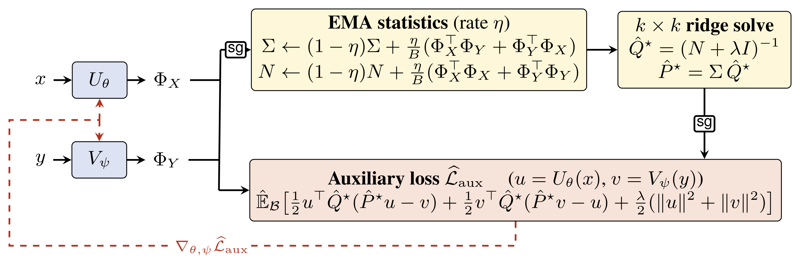
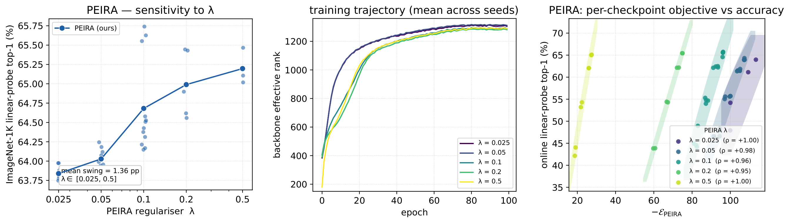
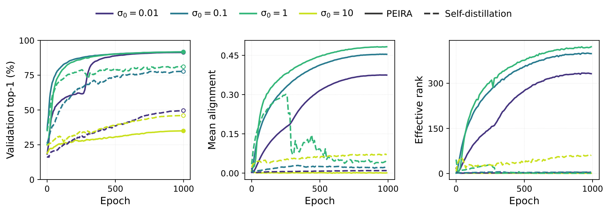

Summary
Self-distillation methods such as SimSiam, BYOL, I-JEPA and DINO train a student network to predict a teacher network. They work well in practice, but they do not minimize a well-defined objective, so what they learn is poorly understood.
We analyze a JEPA variant in which a regularized linear regressor predicts the representation of each view from the other. Its non-collapsed stable equilibria align with the leading nonlinear canonical correlation subspaces, but collapsed equilibria can also be stable attractors.
PEIRA replaces the heuristic with an explicit objective: maximize the trace of the optimal linear regressor between views, with a penalty that keeps feature scale in check. Its only stable equilibria are nontrivial global minimizers that recover the same canonical subspaces, with the regularization $\lambda$ selecting the effective dimension. On ImageNet-1K and CIFAR-10, PEIRA is competitive with VICReg and LeJEPA baselines; with a 1024-dimensional projector it reaches 69.17% ImageNet-1K linear-probe accuracy after 100 epochs of ResNet-50 pretraining.
From self-distillation to PEIRA
Two encoders $U$ and $V$ map the two views $x$ and $y$ of a data point to $\mathbb{R}^k$. For fixed encoders, the ridge regressor that predicts each encoded view from the other has a closed form, a matrix-valued signal-to-noise ratio:
$$P_{U,V} = \Sigma_{U,V}\,(N_{U,V} + \lambda I)^{-1},$$ $$\begin{aligned} \Sigma_{U,V} &= \mathbb{E}\big[V(y)U(x)^{\top} + U(x)V(y)^{\top}\big], \\ N_{U,V} &= \mathbb{E}\big[U(x)U(x)^{\top} + V(y)V(y)^{\top}\big]. \end{aligned}$$$\Sigma_{U,V}$ measures the signal shared across views and $N_{U,V}$ the variability within each view. PEIRA (Predictive Encoders through Inter-View Regressor Alignment) minimizes the following energy, which is the same as maximizing the trace of $P_{U,V}$ under a penalty on feature scale:
The trace sums the contributions of all eigen-modes of the regressor, so maximizing it should favor representations that share the most information between views. The quadratic term controls feature scale, so the trace cannot grow by simply enlarging the features. Since $\operatorname{Tr}(P_{U,V})$ is the Frobenius inner product of $\Sigma_{U,V}$ and $(N_{U,V}+\lambda I)^{-1}$, minimizing $\mathcal{E}_{\text{PEIRA}}$ should also encourage the eigenbases of the signal and noise matrices to align.
Optimizing the objective
Backpropagating through mini-batch estimates of $P_{U,V}$ gives high-variance gradients. Instead, PEIRA uses an auxiliary loss with the same gradient as $\mathcal{E}_{\text{PEIRA}}$, in which the regressor $P^\star = P_{U,V}$ and $Q^\star = (N_{U,V}+\lambda I)^{-1}$ are held fixed:
$$\begin{aligned} \mathcal{L}_{\text{aux}}(U,V;P,Q) &= \tfrac{1}{2}\,\mathbb{E}\big[U(x)^{\top}Q\,(PU(x) - V(y))\big] \\ &\quad + \tfrac{1}{2}\,\mathbb{E}\big[V(y)^{\top}Q\,(PV(y) - U(x))\big] \\ &\quad + \tfrac{\lambda}{2}\,\mathbb{E}\big[\|U(x)\|^2 + \|V(y)\|^2\big], \end{aligned}$$with expectations over pairs of views $(x, y)$. $P^\star$ and $Q^\star$ then only need to be estimated, which allows exponential moving averages (EMA) of the second moments. The gradient of $\mathcal{E}_{\text{PEIRA}}$ is $\tfrac{4}{\lambda}$-Lipschitz for $0<\lambda<1$, which supports gradient-based optimization and informs the choice of learning rate.

Input: encoder parameters $\theta,\psi$; $k\times k$ matrices $\Sigma, N$; regularization $\lambda$; EMA rate $\eta\in(0,1]$.
- Sample a mini-batch $\mathcal{B}$ of $B$ view pairs.
- $\Phi_X, \Phi_Y \leftarrow (U_\theta(x))_{\mathcal{B}},\ (V_\psi(y))_{\mathcal{B}}$
- $\Sigma \leftarrow (1-\eta)\Sigma + \tfrac{\eta}{B}(\Phi_X^{\top}\Phi_Y + \Phi_Y^{\top}\Phi_X)$
- $N \leftarrow (1-\eta)N + \tfrac{\eta}{B}(\Phi_X^{\top}\Phi_X + \Phi_Y^{\top}\Phi_Y)$
- $\hat{P}^\star, \hat{Q}^\star \leftarrow \Sigma(N+\lambda I)^{-1},\ (N+\lambda I)^{-1}$
- Update $\theta,\psi$ with $\nabla_{\theta,\psi}\widehat{\mathcal{L}}_{\text{aux}}(U_\theta, V_\psi; \hat P^\star, \hat Q^\star)$; repeat until converged.
The linear estimators come analytically from running feature statistics, which is efficient for moderate $k$. When the two views are symmetric, a single shared encoder can be used ($V_\psi = U_\theta$). In practice $\eta$ is annealed over training, favoring fresh statistics early and lower variance near convergence.
Canonical structure and stability
The analysis works in the space of all square-integrable encoders, without architectural restrictions. Nonlinear canonical correlation analysis (CCA) pairs functions $\psi_i(x)$ and $\xi_i(y)$ of the two views that are maximally correlated; their canonical correlations $c_1 \ge c_2 \ge \dots$ measure the strength of the shared signal along each direction. Both dynamics below converge to equilibria built from these directions, but they differ in which equilibria are stable (an equilibrium is stable when training returns to it after a small perturbation).
Self-distillation
Stop-gradient on the teacher view, as in SimSiam
- Not a gradient flow, but admits a Lyapunov function, so it converges to an equilibrium.
- Equilibria span at most $k$ canonical directions, each kept only if $c_i^2 \ge 4\lambda$, with amplitude $\tfrac{1}{2}\big(|c| \pm \sqrt{c^2 - 4\lambda}\big)$; stable ones take the $+$ sign: $$f(c,\lambda) = \tfrac{1}{2}\big(|c| + \sqrt{c^2 - 4\lambda}\big).$$
- Non-collapsed stable equilibria span the leading canonical directions.
- The totally collapsed solution $U = V = 0$ is a stable equilibrium, and so are some partially collapsed ones.
PEIRA
Gradient flow of $\mathcal{E}_{\text{PEIRA}}$
- Converges to critical points with the same canonical structure, using the soft threshold $$g(c,\lambda) = \max\big(\sqrt{c} - \lambda,\ 0\big)^{1/2}.$$
- The only stable equilibria are global minimizers, spanning the top-$r_{\max}$ canonical subspace.
- Every other critical point is a strict saddle: no spurious local minima, and collapse is unstable.
- $\lambda$ selects the effective dimension $r_{\max}$, capped by $k$.
At the stable PEIRA equilibria, with orthonormal vectors $\mathbf{q}_i \in \mathbb{R}^k$,
$$U^\star(x) = \tfrac{1}{\sqrt 2}\sum_{i=1}^{r_{\max}} g(c_i,\lambda)\,\psi_i(x)\,\mathbf{q}_i,$$ $$V^\star(y) = \tfrac{1}{\sqrt 2}\sum_{i=1}^{r_{\max}} g(c_i,\lambda)\,\xi_i(y)\,\mathbf{q}_i,$$ $$\min_{U,V}\ \mathcal{E}_{\text{PEIRA}}(U,V) = -\tfrac{1}{2}\sum_{i=1}^{r_{\max}}\big(\sqrt{c_i} - \lambda\big)^2.$$Here $r_{\max}$ is the number of directions with $\sqrt{c_i} > \lambda$, up to $\min(k, R)$ with $R$ the number of canonical directions. The trivial representation does not reach this value, so it cannot be a stable point. A practical consequence: when the target dimension is unknown, choose $k$ conservatively large and let $\lambda$ set the number of active canonical directions. The condition $\lambda < \sqrt{c_1}$ is needed; otherwise every direction is filtered out.
These results hold at the population level, over all square-integrable encoders, and assume distinct canonical correlations. They do not directly apply to neural networks trained on finite data; there, they describe what optimizing the objective aims for rather than a guarantee.
Experimental results
We evaluate PEIRA by linear-probe classification on ImageNet-1K and CIFAR-10, and by transfer to eight downstream classification datasets. We compare against VICReg [1] and SIGReg/LeJEPA [2] with the same augmentations, pretraining budgets and linear probes. PEIRA uses $\lambda=0.1$ on ImageNet-1K and $\lambda=0.7$ on CIFAR-10.
Representation quality
On ImageNet-1K, PEIRA with $k=1024$ is the strongest method under this controlled protocol. On CIFAR-10 it outperforms VICReg and comes close to SIGReg, and on transfer it outperforms SIGReg on average and approaches VICReg.
| Method | Approach | ImageNet-1K | CIFAR-10 | Transfer |
|---|---|---|---|---|
| BYOL [4] | self-distillation (EMA) | 69.3 | – | – |
| SimSiam [5] | self-distillation (stop-gradient) | 67.9 | – | – |
| SimCLR [6] | contrastive (negatives) | 68.5 | – | – |
| VICReg [1] | optimization | 68.81 ± 0.09 | 90.92 ± 0.14 | 72.07 |
| SIGReg [2] | optimization | 66.26 ± 0.28 | 92.34 ± 0.21 | 68.27 |
| PEIRA ($k=256$) | optimization | 66.45 ± 0.11 | 91.36 ± 0.12 | 70.89 ± 0.18 |
| PEIRA ($k=1024$) | optimization | 69.17 ± 0.06 | 91.68 ± 0.18 | 71.09 ± 0.24 |
Spectral alignment during training
The leading eigendirections of the noise matrix $N_{U,V}$ progressively align with those of the signal matrix $\Sigma_{U,V}$, while additional significant spectral modes emerge, consistent with the population analysis. The negative objective closely tracks linear-probe accuracy, suggesting its potential as a label-free indicator of representation quality.
Robustness to the regularization
In an ablation sweep (online linear probe, 1 to 3 seeds per setting), mean ImageNet-1K accuracy varies by only 1.36 percentage points over $\lambda\in[0.025, 0.5]$. Smaller $\lambda$ accelerates the early growth of backbone effective rank, consistent with the spectral role of $\lambda$ predicted by the theory.

Resistance to collapse
We compare PEIRA with its self-distillation counterpart across initialization scales on CIFAR-10. At zero initialization scale, the encoders produce the zero representation, which is a stable attractor of the self-distillation dynamics.

Using the loss
The loss is a standalone PyTorch package. The EMA statistics and step counter live in the module state_dict, and batch second moments are summed across ranks for multi-GPU training. Call the loss exactly once per training step.
pip install peira-lossimport torch
from peira_loss import PEIRALoss
loss_fn = PEIRALoss(latent_dim=1024, T_max=total_steps) # 69.17% row of Table 1
# CIFAR-10: PEIRALoss(latent_dim=..., T_max=..., reg=0.7)
z1, z2 = projector(encoder(view1)), projector(encoder(view2)) # [B, 1024] each
out = loss_fn(z1, z2) # dict: loss, peira_loss, trace_P, cse_loss, reg_loss, peira_lr
out["loss"].backward()Training code, configs and reproduction commands for every table and figure are in Basile-Terv/PEIRA. ResNet-50 backbones from Table 1 are on Hugging Face.
References
[1] Adrien Bardes, Jean Ponce and Yann LeCun. VICReg: Variance-Invariance-Covariance Regularization for Self-Supervised Learning. ICLR, 2022.
[2] Randall Balestriero and Yann LeCun. LeJEPA: Provable and Scalable Self-Supervised Learning Without the Heuristics. arXiv:2511.08544, 2025.
[3] Quentin Garrido, Randall Balestriero, Laurent Najman and Yann LeCun. RankMe: Assessing the Downstream Performance of Pretrained Self-Supervised Representations by Their Rank. ICML, 2023.
[4] Jean-Bastien Grill et al. Bootstrap Your Own Latent: A New Approach to Self-Supervised Learning. NeurIPS, 2020.
[5] Xinlei Chen and Kaiming He. Exploring Simple Siamese Representation Learning. CVPR, 2021.
[6] Ting Chen, Simon Kornblith, Mohammad Norouzi and Geoffrey Hinton. A Simple Framework for Contrastive Learning of Visual Representations. ICML, 2020.
BibTeX
@inproceedings{arbel2026peira,
title = {{PEIRA}: Learning Predictive Encoders through Inter-View Regressor Alignment},
author = {Arbel, Michael and Terver, Basile and Ponce, Jean},
booktitle = {Advances in Neural Information Processing Systems (NeurIPS)},
year = {2026},
eprint = {2605.17671},
archivePrefix = {arXiv},
}